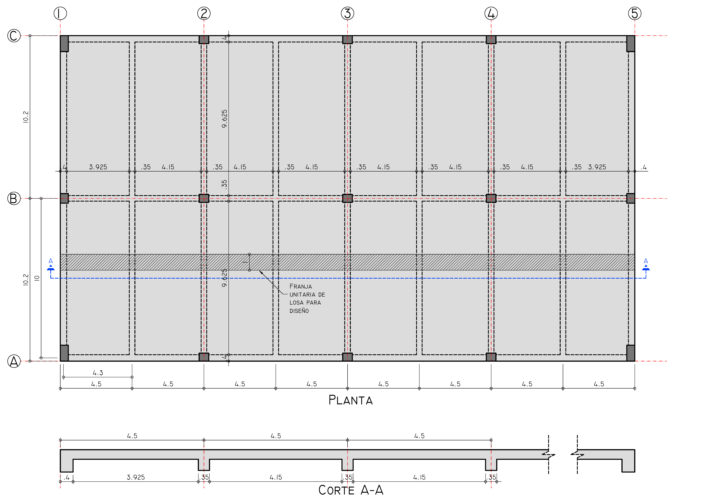
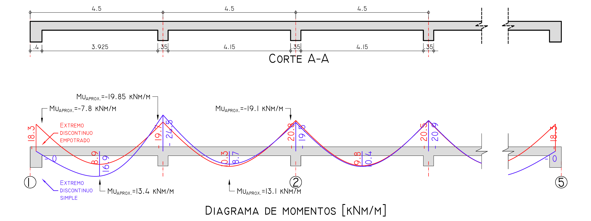
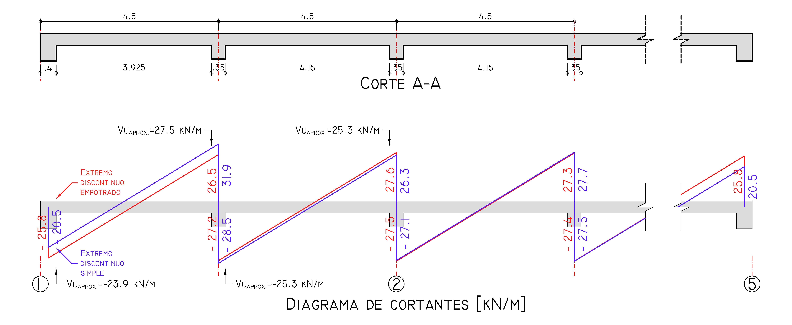

Aprender haciendo. Comprender antes de detallar.
Diseño de Losa Maciza en una Dirección
1. Geometría y Configuración
Se analiza una losa continua con las siguientes luces entre ejes:
\( L = 4.30 \text{ m} \)
\( 0.40 \text{ m} \)
\( L = 4.50 \text{ m} \)
\( 0.35 \text{ m} \)

Figura 1: Planta General del Sistema de Losa.
2. Predimensionamiento (Control de Deflexión)
Ver NSR-10 Tabla C.9.5(a). Calculamos el espesor mínimo \( h \) según las condiciones de continuidad:
- Un extremo continuo: \( h = \frac{4.30}{24} = 0.179 \text{ m} \approx 0.18 \text{ m} \)
- Ambos extremos continuos: \( h = \frac{4.50}{28} = 0.160 \text{ m} \)
⚠️ Nota: Dado que 0.17 < 0.18, es obligatorio realizar el chequeo de deflexiones.
Donde: recubrimiento = 20 mm, barra No. 4 (φ = 12.7 mm)
3. Análisis de Cargas (Ancho unitario \( b = 1.0 \text{ m} \))
\( 24 \frac{\text{kN}}{\text{m}^3} \cdot 0.17 \text{ m} = 4.08 \frac{\text{kN}}{\text{m}^2} \)
\( 1.0 \frac{\text{kN}}{\text{m}^2} \) (Adicional)
\( 3.8 \frac{\text{kN}}{\text{m}^2} \)
\( 5.08 \frac{\text{kN}}{\text{m}^2} \)
Combinaciones de carga:
- \( 1.4D = 1.4(5.08) = 7.11 \frac{\text{kN}}{\text{m}^2} \)
- \( 1.2D + 1.6L = 1.2(5.08) + 1.6(3.8) = 12.18 \frac{\text{kN}}{\text{m}^2} \)
4. Verificación de Coeficientes (NSR-10 C.13.5.5.3)
Para usar los momentos y cortantes aproximados, verificamos las 4 condiciones:
- ✓ a) Vano: Tiene 8 luces (mínimo 2).
- ✓ b) Distribución: Cargas uniformemente distribuidas.
- ✓ c) Relación L/D: \( L \le 3D \rightarrow 3.8 \le 3(5.08) = 15.24 \) (Cumple).
- ✓ d) Geometría: Losa prismática (sección constante).
Conclusión: Es posible aplicar los coeficientes de momentos y cortantes de la norma.
5. Cálculo de Momentos Flectores \( M_u \)
Aplicación de coeficientes según ubicación del vano. Ver NSR-10 C.13.5.5.3
Para el cálculo, utilizamos la carga última \( w_u = 12.18 \text{ kN/m}^2 \) y las luces libres correspondientes.
| Ubicación | Luz \( L_n \) | Coeficiente | \( M_u \) Calculado |
|---|---|---|---|
| Apoyo Exterior (Cara Ext.) | \( 3.925 \text{ m} \) | \( 1/24 \) | \( 7.8 \text{ kNm/m} \) |
| Centro Tramo Exterior (+) | \( 3.925 \text{ m} \) | \( 1/14 \) | \( 13.4 \text{ kNm/m} \) |
| Primer Apoyo Interior (-) | \( 4.038 \text{ m}^* \) | \( 1/10 \) | \( 19.85 \text{ kNm/m} \) |
| Apoyos Interiores Típicos (-) | \( 4.15 \text{ m} \) | \( 1/11 \) | \( 19.1 \text{ kNm/m} \) |
| Centro Tramo Interior (+) | \( 4.15 \text{ m} \) | \( 1/16 \) | \( 13.1 \text{ kNm/m} \) |
* Luz promedio entre \( 3.925 \text{ m} \) y \( 4.15 \text{ m} \) para momentos negativos en apoyos interiores inmediatos al exterior.

Figura 2: Ubicación de Momentos Críticos y Diagrama de Momentos por Elementos Finitos.
6. Cálculo de Cortantes de Diseño \( V_u \)
Resistencia requerida en las caras de los apoyos. Ver NSR-10 C.13.5.5.3

Figura 3: Diagrama de Cortantes por Elementos Finitos.
7. Diseño por Flexión y Refuerzo
Parámetros de diseño y cálculo de acero (\( f'_c = 28 \text{ MPa} \), \( f_y = 420 \text{ MPa} \))
🔍 Ver Desarrollo Detallado: Iteración para Diseño a Flexión (Repaso Armado I)
Datos:
- \( M_u = 19.85 \text{ kNm/m} = 19.85 \times 10^6 \text{ Nmm/m} \)
- \( b = 1000 \text{ mm} \), \( d = 143.65 \text{ mm} \)
- \( f'_c = 28 \text{ MPa} \), \( f_y = 420 \text{ MPa} \), \( \phi = 0.90 \)
Iteración para obtener "a":
Paso 1: Suponer \( a_0 = \frac{d}{10} = 14.4 \text{ mm} \)
Paso 2: Calcular \( A_s \): \[ A_s = \frac{M_u}{\phi f_y (d - a/2)} = \frac{19.85 \times 10^6}{0.90 \times 420 \times (143.65 - 14.4/2)} = 384.9 \text{ mm}^2 \]
Paso 3: Recalcular \( a \): \[ a_1 = \frac{A_s f_y}{0.85 f'_c b} = \frac{384.9 \times 420}{0.85 \times 28 \times 1000} = 6.79 \text{ mm} \]
Paso 4: Verificar convergencia: \[ \frac{|a_1-a_0|}{a_1} = \frac{|6.79-14.4|}{6.79} = 112.0\% > 1\% \]
No convergió → continuar iterando.
Iteración 2 con \(a_1=6.79\text{ mm}\):
\[ A_s=374.4\text{ mm}^2 \] \[ a_2=6.61\text{ mm} \] \[ \frac{|a_2-a_1|}{a_2} = \frac{|6.61-6.79|}{6.61} = 2.79\% > 1\% \]
No convergió → continuar iterando.
Iteración 3 con \(a_2=6.61\text{ mm}\):
\[ A_s=374.2\text{ mm}^2 \] \[ a_3=6.60\text{ mm} \] \[ \frac{|a_3-a_2|}{a_3} \approx 0.07\% < 1\% \]
✓ CONVERGIÓ
Cuantía requerida: \[ \rho_{req} = \frac{A_s}{b \cdot d} = 0.00260 \]
Verificación de cuantía mínima:
Para losas estructurales de espesor uniforme, el refuerzo mínimo en la dirección de la luz es el requerido por C.7.12.2.1. Para barras Grado 420: \[ A_{s,min}=0.0018\,b\,h \] \[ A_{s,min}=0.0018(1000)(170)=306\text{ mm}^2/m \]
Decisión: \( A_s = 374.2 \text{ mm}^2 > A_{s,min} = 306 \text{ mm}^2 \) → Gobierna el acero por resistencia
Selección de refuerzo (Separación): \[ s = \frac{A_b \times 1000}{A_s} = \frac{127 \times 1000}{374.2} = 339.4 \text{ mm} \]
Espaciamiento adoptado: s = 325 mm (múltiplo comercial inmediato inferior)
\( s_{max} = \min(3h, 450) = 450 \text{ mm} \)
\( s_{adoptado} = 325 \text{ mm} < 450 \text{ mm} \) ✓
Resultados de Armadura por Tramo
| Ubicación | \( M_u \) (kNm) | \( \rho_{req} \) | \( A_s \) Final (\( \text{mm}^2 \)) | Separación (s) |
|---|---|---|---|---|
| Ext: \( M_u - \) exterior | \( 7.82 \) | \( 0.00101 \) | \( 306 \text{ (min)} \) | \( s = 400 \text{ mm} \) |
| Ext: \( M_u + \) centro | \( 13.40 \) | \( 0.00174 \) | \( 306 \text{ (min)} \) | \( s = 400 \text{ mm} \) |
| Ext: \( M_u - \) interior | \( 19.85 \) | \( 0.00260 \) | \( 374.2 \) | \( s = 325 \text{ mm} \) |
| Int: \( M_u - \) apoyo | \( 19.06 \) | \( 0.00250 \) | \( 359.0 \) | \( s = 350 \text{ mm} \) |
| Int: \( M_u + \) centro | \( 13.11 \) | \( 0.00171 \) | \( 306 \text{ (min)} \) | \( s = 400 \text{ mm} \) |
- Momentos bajos (7.82, 13.40, 13.11 kNm): \( A_s \) por resistencia < \( A_{s,min} \) → Gobierna cuantía mínima (306 mm²)
- Momentos altos (19.85, 19.06 kNm): \( A_s \) por resistencia > \( A_{s,min} \) → Gobierna acero por flexión
💡 Criterio Estructural: En losas delgadas con cargas moderadas, es común que la cuantía mínima gobierne en zonas de momento positivo.
8. Verificaciones de Detallado y Refuerzo Transversal
Control de fisuración y acero por retracción y temperatura
A. Control de Fisuración (C.10.6.4)
Para el refuerzo a tracción, calculamos la separación máxima para controlar el ancho de grieta:
Cálculo según NSR-10 C.10.6.4:
\( s_{max} = \min(s_1, s_2) = \mathbf{300 \text{ mm}} \)
B. Refuerzo por Retracción y Temperatura (C.7.12)
Suministrado en dirección perpendicular al refuerzo principal:
9. Verificación de Resistencia al Cortante (\( V_u \))
Seguridad de la sección de concreto ante esfuerzos transversales
Calculamos la capacidad nominal del concreto según la expresión de la norma para elementos sin refuerzo transversal (estribos):
\( 27.5 \text{ kN/m} \)
\( 129.2 \text{ kN/m} \)
\( 0.75 \)
\( 96.9 \text{ kN/m} \)
La resistencia nominal \( \phi V_c \) es sustancialmente mayor al cortante de diseño \( V_u \). Según las consideraciones del Capítulo C.11 de la NSR-10, para losas macizas que cumplen que \( V_u < \phi V_c \), no es obligatorio proveer un área mínima de refuerzo a cortante (estribos). Dado el amplio margen estructural de este diseño, la sección de concreto de 17 cm es completamente adecuada por sí sola.
10. Longitudes de Desarrollo y Detallado del Refuerzo
Anclaje y extensión del acero según NSR-10 C.12
A. Longitud de Desarrollo para Barras No. 4
Para barras corrugadas en tracción (NSR-10 C.12.2.2), fórmula simplificada:
Para losas con barras No. 4, \( f_y = 420 \text{ MPa} \), \( f'_c = 28 \text{ MPa} \), \( recub = 20 \text{ mm} \) y empalme por traslapo Clase B:
B. Extensiones Mínimas del Refuerzo (NSR-10 C.13.3.8)
| Tipo de Refuerzo | Extensión Mínima | Para este Ejemplo |
|---|---|---|
| Refuerzo negativo en apoyo interior | \( \geq 0.3 L_n \) desde cara del apoyo | \( 0.3 * 4150 = 1245 \text{ mm} \approx 1.25 \text{ m} \) |
| Refuerzo positivo en tramos | Si se usa, Empalme por Traslapo Clase B: \( L_{traslapo} \) | \( 460 \text{ mm} \) |
| Anclaje en apoyo exterior | Gancho estándar 90° : \( L_{dh} \), Ver C.12.5 | \( L_{dh} \approx 20\phi = 254 \text{ mm} \) |
En losas continuas, es común usar refuerzo corrido en la parte inferior (acero positivo) con bastones adicionales en zonas de momento negativo. Esto simplifica el armado y garantiza continuidad estructural.
11. Esquema de Despiece del Refuerzo
Distribución esquemática final en corte longitudinal
Corte Esquemático - Disposición de Acero

Disposición final del refuerzo longitudinal y transversal a lo largo de la losa.
GUÍA PARA INTERPRETAR EL DESPIECE: Refuerzo Superior (Momentos Negativos): • Apoyo Ext. 1: Bastones No.4 @ 300 mm extendiendo 1.25m desde la cara del apoyo. • Apoyo Int. 2: Bastones No.4 @ 300 mm extendiendo 1.25m a cada lado del apoyo. Refuerzo Inferior (Momentos Positivos): • Corrido: No.4 @ 300 mm a lo largo de toda la losa. Refuerzo Transversal (Temperatura): • Perpendicular al principal: No.4 @ 400 mm, sobre el refuerzo corrido.
12. Paso Final — Reto para el Estudiante
Como el espesor adoptado (\( 0.17 \text{ m} \)) es menor al predimensionamiento por tabla (\( 0.18 \text{ m} \)), es obligatorio calcular las deflexiones inmediatas y a largo plazo. ¡A desempolvar los apuntes de inercias!
Consultas y Discusión Académica
Inicia sesión con tu cuenta de GitHub para dejar una pregunta o comentario técnico sobre este ejemplo.